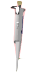
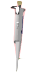

Manual
1. Prepare a standard K2Cr2O7 solution of strength nearly 3×10-3M (for the experiments described here we have used a solution of strength=3.16×10-3M). This is used as stock solution.
2. Turn on the instrument clicking on the power button and wait for 30 min for initialization of the instrument.
3. Click and drag on the concentration bar to choose the appropriate concentration of the solution whose absorbance has to be measured. One should start with the lowest concentration solution first. Why?
4. Click on the beaker to take a clean, dry beaker.
5. Click on the volumetric flask to pour the solution into the clean, dry beaker.
6. Click on the micropipette to collect appropriate quantity of solution from the beaker.
7. Take a cuvette (quartz cuvette with a given path length, say, 1 cm) by clicking on it.
8. Pour the solution from the micropipette into the cuvette by clicking on the micropipette. (In real measurements, the cuvette is filled to two-third of its volume.)
9. Click on the spectrophotometer lid to open it.
10. Click on the cuvette to place it in the sample holder. One has to use water as the sample blank or reference in an identical cuvette for this measurement. Here a double beam spectrophotometer is shown. In this case, one can place the sample in the sample holder (often the front one) and the sample bank or reference in the reference holder (often the back one) simultaneously.
11. Run the wavelength scan by clicking on the Computer monitor first and then on the Scan button there to observe the wavelength scan.
12. Click on Reset button to start new measurement.
13. Select next higher concentration and repeat the measurement. Every time one should rinse the cuvette taking a small portion of the solution from the solution that will be measured next. Similarly, one can repeat it for all the concentrations one after another.
14. Plot the absorbance of the sample at various wavelengths for different concentrations and determine the wavelength of maximum absorptions i.e., spectral peak-positions.
15. Find out the wavelengths of maximum absorbance (λmax), the absorbance at λmax and at another wavelength (say, 335 nm) for all the concentrations of K2Cr2O7 and make a table containing these data.
16. Plot absorbance vs. concentration. Connect the points first with line segments. Then attempt linear fits and calculate linear regressions.
17. Verify the Beer-Lambert Law by observing whether absorbance and transmittance values have linear correlation with concentration or not. Discuss your results.

 
